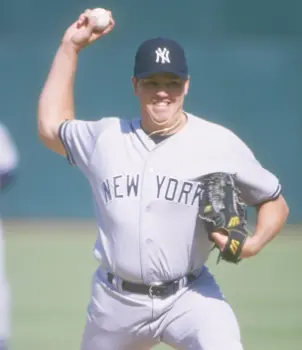

David Weathers "Stormy"
Career Highlights & Facts
(Facts are AI-generated and may require verification)
- Recorded 964 pitching appearances, ranking among the most prolific in history at the time of retirement.
- Secured a crucial strikeout of a high-profile slugger to help clinch a championship title.
- Father of a professional pitcher who debuted in the postseason.
Would you like to find out more about David Weathers?
1992 Toronto Blue Jays
Adrian Fung
Right-handed pitcher David Weathers played professionally in small towns and large cities across the United States and Canada but his origins and present life are firmly rooted in southern Tennessee. He was an integral relief pitcher on the 1996 World Series champion New York Yankees and after playing for nine teams in 19 major-league seasons, Weathers retired after the 2009 campaign with 964 pitching appearances. At the time, only 16 men had pitched more regular season games in major-league history.
Weathers finished his career 73-88 with a 4.25 ERA, 976 strikeouts, 75 saves, and 158 holds.
John David Weathers was born on September 25, 1969, in Lawrenceburg, Tennessee, the younger of two sons born to Thomas Rual Weathers and Gloria “Dodie” Dean Weathers (née Bennett). Weathers grew up in Five Points, Tennessee, a town of approximately 200 people, three miles north of the state’s southern border with Alabama.
Gloria Weathers worked for Curtis Industries, a supplier of keys and security machinery. Thomas Weathers worked as a pipefitter. “My mother was a factory worker, and my dad was a construction worker,” Weathers explained in an April 2022 interview.
“He was in the Army from 1963 through 1966. When his service time was up, his regiment went to Vietnam three weeks later, but he had already gotten out. There were already soldiers over there, but he did not have to go. He was stationed in Hawaii.”
Initially, David Weathers received support from only his mother to play baseball. “My mom encouraged me to play sports but my dad used to say all the time, ‘Why do you want to play baseball? What are you ever going to get out of it?’ My mom talked him into letting me play Little League when I was 9, and of course, 12 years after I started, I was in the big leagues. We always laughed, before he passed away, that he always said, ‘What are you going to get out of baseball?’ So my mom was very instrumental in getting me started.”
At Loretto (Tennessee) High School, Weathers primarily pitched but also played third base and all three outfield positions. He was the Loretto Mustangs baseball team MVP in his senior year and was named All-District and All-State for three consecutive seasons. He also played basketball all four years at high school, earning All-District honors in his junior year, and was named school MVP and Associated Press All-State honorable mention in his senior year.
David’s brother Mike, one year older, played baseball, basketball, and football at Loretto. “My one year in junior college, we were roommates and we played together and then he played another year at University of Tennessee at Martin. He was a very good athlete, a good pitcher. Once he finished his junior year at UT-Martin, he decided to get into the work force, got married, and he’s lived in Gadsden, Alabama, ever since.”
After graduating from Loretto, David Weathers won the 1987 senior Babe Ruth Tennessee state tournament and advanced to the Southeast Regionals in Cape Coral, Florida. There, he pitched a two-hit shutout with six strikeouts to lead the Lawrenceburg All-Stars to a 2-0 win over Mississippi.
Later that summer, Weathers enrolled at the Moore County Campus of Motlow State Community College, a Division I junior college in Tullahoma, Tennessee. “Right after my senior year, we reported to Motlow in early August, and we had a Dodgers tryout; the Dodgers organization ran a camp at our field. There were four or five of us that they wanted to see that they had followed all through high school and when I threw that day, I threw really well, and from that day forward I knew I was going to get drafted.”
Weathers struck out 67 batters to set a Motlow State Bucks single-season record.
The team MVP, he helped Motlow State to a 29-19 record in 1988, its best season since 1981.
“One night, it was pouring rain, but our coach loved to play so we worked on our field all day. We dug holes on the infield for the water to flow into, then covered them back up. That very night, I was pitching and a Detroit Tigers scout and a Minnesota Twins scout dropped in to watch us play. That was my second start in the spring and after that start, it just exploded. Those guys turned me in to the national scouting bureau and the next time I pitched, there were probably 25 scouts there.”
The Blue Jays sent scout Duane Larson, who previously recommended
Kelly Gruber
and
David Wells
to the organization, to watch Weathers pitch.
“Duane was from North Carolina, and he always had a lot of questions. He always talked to me about my mechanics and things like that,” Weathers said. “My dad always said that he thought [Toronto] was going to be the team that drafted me. Duane was a great guy. He made sure that he knew where I was from. He knew I was from a small town. He knew I was from a poorer family. He made sure that once I got to the Blue Jays, he kept his word to my mom that he would take care of me. I have the utmost respect for Duane.”
Toronto drafted Weathers, 6-feet-3 and 205 pounds, in the third round of the 1988 June amateur draft, 82nd overall.
Larson signed Weathers to his first professional contract on June 4.
Toronto assigned Weathers to short-season Class-A St. Catharines of the New York-Penn League. Weathers was one of two 18-year-old pitchers in the 12-team league and his youth betrayed him on his very first day in St. Catharines, when he met manager Eddie Dennis.
“I called him ‘coach Dennis,’ because that’s what you said in college. My first professional day I got cussed out by our manager for calling him ‘coach Dennis’ [but] Eddie Dennis was one of those managers that took us young guys and absolutely helped develop us.”
Weathers started his professional career by winning his first two decisions. He finished the year 4-4 with a 3.02 ERA.
At Myrtle Beach of the Class-A South Atlantic League in 1989, Weathers was the ace of a club that finished in last place, going 11-13 with a 3.86 ERA, leading the league with 31 starts. He moved up another rung in 1990 when he joined the Dunedin Blue Jays of the advanced Class-A Florida State League. Once again, Weathers led the league in starts (27, tied with three other pitchers) and finished 10-7 with a 3.70 ERA.
At Knoxville of the Double-A Southern League in 1991, Weathers was 9-7 with a 2.62 ERA and 100 strikeouts in 20 starts at the end of July. His ERA and strikeouts led the Knoxville starting rotation, as did his four complete games and two shutouts. On August 1 Weathers was called up to the major leagues after the Blue Jays placed reliever
Mike Timlin
on the 15-day disabled list with elbow stiffness.
Timlin and Weathers were A-ball pitchers one season earlier in Dunedin, and now Toronto was calling on Weathers to fill Timlin’s spot.
“What is really ironic about all of that is Timlin and I were best friends and still are. We were in each other’s weddings. In Orlando, [Knoxville manager]
John Stearns
came up to me and said, ‘You’re not pitching today. You’re not pitching because you’re going to Fenway to meet the team tomorrow in Boston.’”
When Weathers walked into
Fenway Park
, it was the first time in his life he had entered a major-league ballpark. “We were sitting in the bullpen and
Tom Henke
looked at me and said, ‘Stormy, if you go in tonight, whatever you do, do not look at the Green Monster.’”
With Boston leading Toronto 5-3 in the eighth inning, Weathers, 21, the youngest player on the Toronto roster, jogged to the mound to make his major-league debut. He glanced at Fenway’s 37-foot-high left-field wall, the Green Monster. “I looked right at it. I felt like I could change the numbers on the scoreboard on the wall, it was so close to me. It was so big.”
Mike Greenwell
, who earlier in the game had hit a go-ahead three-run home run, greeted Weathers with a double to left – off the Green Monster. After
Tom Brunansky
failed on a sacrifice attempt and fouled out, batterymate
Pat Borders
helped Weathers by throwing out Greenwell attempting to steal third. Weathers caught
Ellis Burks
looking at a 3-and-2 slider, to complete his first major-league inning.
When Timlin was activated from the disabled list on August 16, Toronto returned Weathers to Double A. Weathers was one of eight players recalled to Toronto when rosters expanded on September 1.
He earned his first major-league win on the final day of the regular season in Minnesota. After the game, Weathers and three others were added to a stand-by squad in case any postseason roster players were injured in the upcoming ALCS.
Weathers, by his recollection, suffered the only major injury of his career the next season pitching for Triple-A Syracuse when he was sidelined from May 11 to July 31 with a right elbow strain. “In ’92 when I strained my ligament, that was the worst injury I had and I missed two months. Other than that, 15 days here or there but nothing major.”
After his arm recovered, Toronto recalled Weathers on August 20. Weathers pitched in two games for the Blue Jays, both in relief, before being sent back to Syracuse when the Blue Jays traded for starting pitcher
David Cone
on August 27.
Weathers was once again on standby during Toronto’s postseason run, but this time he was able to keep his arm ready by pitching in the inaugural Arizona Fall League. When the Blue Jays won the World Series for the first time in franchise history, the organization gave him a championship ring and, importantly, despite only two regular-season appearances, the players voted to give Weathers 19 percent of a full World Series share, which added $22,800 to his $121,000 salary.
“I was in Edmonton with the Marlins [in 1993] and [Blue Jays assistant general manager] Gord Ash gave me my ring. That’s just another part of the Blue Jays where they were so classy. They flew out and gave every player their ring personally.”
The Florida Marlins claimed Weathers in the autumn 1992 expansion draft. He started 1993 excellently, pitching for the Triple-A Edmonton Trappers. By mid-June he was 8-1 with a 3.59 ERA in the hitter-friendly Pacific Coast League.
At the end of the minor-league season, Weathers was 11-4 with a 3.83 ERA. He was called up on Labor Day, made his first major-league start that night, and won it, pitching eight shutout innings against San Diego. Weathers finished 2-3 with a 5.12 ERA in his first taste of the National League.
In the offseason, one week before Christmas back in Tennessee, Weathers, 24, married Kelli Davis, 21, an outstanding athlete and a Loretto graduate.
In 1994 Weathers led all Florida pitchers in starts (24), wins (8), and innings pitched (135) but struggled in the strike-shortened second half of the season. At the All-Star break, he was 8-7 with a 3.86 ERA. After the break, he was 0-5 with a 12.13 ERA as opponents batted .406 against him.
Perplexed by how to optimally deploy Weathers, Florida – and later, New York, Cleveland, and Cincinnati – moved him several times between the starting rotation and the bullpen, leading to mediocre results and 3½ seasons of frustration for Weathers. From the start of 1995 with Florida until Cincinnati released him in mid-1998, he appeared in 105 games, 37 as a starter and 68 as a reliever. As a starter, he was 7-12 with a 6.08 ERA; in relief, 2-4 with a 6.14 ERA.
However, during that time, there was one spectacular six-week stretch of pitching by Weathers from mid-September to late October of 1996.
Weathers began that season as a Florida middle reliever, moved into the rotation for eight starts, then returned to the bullpen to set up closer
Robb Nen
. On July 31 the New York Yankees traded reliever
Mark Hutton
for Weathers ahead of the nonwaiver trade deadline.
Though Weathers expected to continue relieving in New York, the Yankees put the newcomer into their starting rotation out of necessity because two familiar faces from his time with Toronto, David Cone and
Jimmy Key
, both were recovering from shoulder surgeries. Cone had not pitched since May 2 and while Key was in the rotation, he had twice been on the disabled list earlier in 1996.
It was a disastrous move. With his arm not properly prepared for starting, Weathers allowed 10 walks, 19 hits, and 17 earned runs in four starts, leading to a demotion to Triple A. “In Columbus, I started for the most part but in the first series of the [Triple-A] playoffs, I started closing and it was just one of those times you get locked in.”
Recalled to New York in mid-September, Weathers returned as a completely different hurler and the Yankees used him mostly as the seventh-inning man. He appeared in seven games, allowing one run in seven innings. On the final day of the season, Yankees manager
Joe Torre
told Weathers he had earned a spot on the postseason roster.
In the ALDS against Texas, Weathers was New York’s bullpen ace, leading all relievers on both teams with five shutout innings. He struck out five and allowed only one single. Looking to clinch the series at Arlington in Game Four, New York trailed 4-3 in the fourth inning when Torre called Weathers into the game with two on and nobody out.
Juan Gonzalez
stepped to the plate, batting 7-for-14 with five home runs.
Arriving at the mound, Weathers and the infielders received one message from their manager. “Torre said, ‘Let’s pound the fastball in and get the double play.’ I’ll never forget
Tino Martinez
, when Joe walked off the mound, said, ‘You’re
not
throwing him a first-pitch fastball. He’s killing us. He can’t hit your slider. Throw it until he doesn’t swing at it.’ Sure enough, I throw a slider and he fouled it off. Then I threw two more about a foot outside and he swung at both of them.”
After the huge strikeout of Gonzalez, Weathers snuffed Texas’s rally by getting
Will Clark
to ground into an inning-ending double play. The Yankees came back to win and Weathers was credited with the series-clinching victory. Weathers blanked Baltimore in two games in the ALCS, earning a second win, then gave up his first run in October, pitching in three World Series games against Atlanta for a total of 11 nearly flawless postseason innings.
In Game Six at Yankee Stadium, New York was leading 3-1 in the sixth inning but Atlanta had a runner on third base and the potential tying run coming up to bat, NLCS MVP
Javy Lopez
. Torre brought in Weathers, handed him the ball and said, “It’s all yours, Weatherman.”
“All I could think was, ‘Don’t give it up because if you do, you’re not making it out of the Bronx tonight.”
Working quickly, Weathers struck out Lopez on three pitches: an inside fastball, a low fastball fouled off, and the final pitch, a hard slider well outside that Lopez flailed at in vain.
“People always ask me, ‘Why did he swing at that?’ Well I knew I had finished him so many times inside with a fastball and in his mind he was just sitting dead-red in.
Joe [Girardi
called a fastball but I chose the slider and he swung at it.” Three innings later, the Yankees were World Series champions for the 23rd time.
On November 6 the Loretto Civic Center held a celebration in honor of their local world champion and the next day was declared David Weathers Day by the Lawrenceburg City Commission. After a tumultuous year, Weathers confessed that at times he doubted if his career would continue much longer and wondered if he even liked baseball anymore. Yet his wife, Kelli, who “keeps pushing me forward,” and Torre had faith in him. “He said I was going to pitch in the pennant race and the playoffs. I trusted him and he brought me back up [from the minor leagues].”
In one career-defining moment, coming into pitch with the World Series on the line, Weathers said, “The love for the game that had died was rekindled. I thought, ‘This is what we play for.’”
But just as quickly as Weathers’ stock rose, it plummeted back to earth during a rocky 1997 season. Weathers came out of the bullpen in 10 games, giving up 10 runs before New York sent him back to Columbus, where he was placed in the starting rotation. He was dealt to Cleveland and continued to start at Triple-A Buffalo before his recall to the major leagues – in a relief role.
Weathers returned to the National League in 1998, signing a one-year contract with Cincinnati. Once again he was moved between the rotation and bullpen, leading to a 2-4 record and a 6.21 ERA in seven relief appearances and nine starts. It was a difficult season from the start as Weathers’ father, Thomas, died unexpectedly in late April. Weathers quickly returned to Tennessee for the funeral, then two days later flew to New York and valiantly pitched eight shutout innings, striking out seven, earning the win over the Mets. “For three hours, I was able to take my mind off things. I did do it for my dad. We were real close. It was just a great feeling. But it was hard to get real emotional for a baseball game after the four days I just went through.”
Cincinnati waived Weathers at the beginning of the summer and Milwaukee immediately picked him up. The Brewers, strictly defining Weathers as a reliever, extracted the best results out of the right-hander. In 28 appearances, he entered games mostly in the seventh inning – the same role he flourished in during his time on the 1996 Yankees – pitching 47⅔innings with 43 strikeouts, 3 holds and a 3.21 ERA.
“[Manager]
Phil Garner
was the first person who put me into a role. He said, ‘You’re going to pitch the seventh and eighth here,’ and my career took off from that point forward. The whole time I was with the Marlins and the Yankees, those guys, they moved me back and forth so much and I never physically felt good and it’s hard to compete at that level when you physically don’t feel good. It was just one of those times where you have to grind through it. Fortunately for me, I got a good opportunity with the Brewers in ’98 and I made the most of it.”
Early in 1999,
The Sporting News
observed that the changeup Weathers rarely threw at the start of his career was now an effective weapon. “[Weathers] pounds the strike zone with a nasty late-breaking slider, a heavy sinker and a surprising changeup. In the past, Weathers was always a ‘two-pitch’ reliever. His changeup now gives hitters one more thing to think about. Even if he doesn’t throw it for a strike all the time, it helps set up his other pitches.”
Now permanently a reliever, Weathers could concentrate on conditioning himself properly. “I could work out. I could get in the weight room. I could do everything that I knew for what my role was. It allowed me to stay healthier and keep my arm stronger because I knew my role. It wasn’t to start. It was 100 percent to get ready that day to pitch out of the bullpen. I think that’s what the hard part is between starting and relieving – going back and forth – you just can’t take care of your arm. You can’t take care of your body. What if I work out today and throw three innings tonight? Or what if I throw a bullpen tonight and tomorrow they say you’re going to start, and they expect you to go five or six innings? Then you never know what you’re going to do and you’ll always have trouble preparing.”
Weathers pitched the best baseball of his career the next two seasons. He set up
Curtis Leskanic
and
Bob Wickman
in 2000, leading Milwaukee relievers with 14 holds. In 2000 and 2001 combined, Weathers pitched in 121 games and posted a two-season ERA of 2.62. The Chicago Cubs also liked his .188 opponents’ batting average at the 2001 trade deadline and acquired the right-hander. Weathers was a workhorse, pitching in 28 games – seven of them on zero days’ rest – and recorded a 3.18 ERA in 28⅓ innings, finishing with 80 games pitched for Milwaukee and Chicago, fifth-most in the NL.
Weathers signed a three-year deal with the New York Mets before the 2002 season to be the set-up man behind closer
Armando Benitez
, In both 2002 and 2003, Weathers led New York relievers in games, innings pitched, holds and multi-inning appearances. Yet despite one of the highest payrolls in the major leagues, New York finished last in the NL East in both seasons.
In 2004, the floundering Mets began shedding salary and Weathers was on the move back to the NL Central on June 17, traded to Houston. He was less effective with the Astros, pitching 32 innings with a 4.78 ERA. He was released on September 7 and signed by a former club, the Florida Marlins, where he finished the season.
Shortly before Christmas, Weathers signed a one-year contract to pitch for another former employer, the Cincinnati Reds. He began 2005 in his usual role as a middle reliever. However, by early June, two-time All-Star closer
Danny Graves
faltered and was released. After Weathers and left-hander
Kent Mercker
alternated the eighth- and ninth-inning roles, Weathers became, for the first time in his career, a full-time closer in August. He pitched in 73 games, converting 15 of 19 save opportunities and stranding 24 of 30 inherited runners.
In 2006 as the Reds’ closer, Weathers stumbled, relinquishing the role to
Todd Coffey
and later
Eddie Guardado
. After Guardado required season-ending
Tommy John
surgery, Weathers reclaimed the closer position, finishing the year with 12 saves in 19 opportunities. Despite an up-and-down season, Cincinnati’s skipper,
Jerry Narron
, assured Weathers he was the team’s closer.
“When we went into ’07, Jerry Narron and I were close and he had a lot of confidence in me. He said from day one, ‘I want you to be our closer. I think you can handle it.’ I loved knowing that I went out there with no net. I knew they would pitch me not like a normal closer where I’d just get my three outs. I think I led the league that year with the most four-out-plus saves but that’s how I loved to pitch. For a guy that threw 90 to 92 with a breaking ball to go 33 for 40 is a pretty good year but I loved it. I loved closing.”
That 2007 campaign was his most notable. He pitched in 70 games, with a league-high 60 games finished and 33 saves, seventh-most in the NL. However, in the offseason, Cincinnati opted to sign hard-throwing
Francisco Cordero
, who had averaged 30 saves over the past six seasons with Texas and Milwaukee, to a four-year contract, moving Weathers into a set-up role. Weathers recorded a team-leading 19 holds in 2008.
Weathers started off 2009 flawlessly, pitching scoreless baseball in his first 10 appearances. Yet with the Reds headed toward a ninth consecutive losing season, Cincinnati began trading players to build for the future. As was the case 11 years before, Weathers moved from the Reds to Milwaukee at midseason. He finished with 21 holds, good for 10th in the NL, but as a team the Brewers finished well out of postseason contention.
On the second-to-last day of the season, October 3, Milwaukee played at St. Louis. Weathers came on in the bottom of the sixth inning to protect a one-run lead. He allowed a single to
Mark DeRosa
, then got a force out at second on a popped-up bunt by
Jason LaRue
that Weathers intentionally allowed to fall to the grass in an attempt to start a double play. After a pinch-hit single by
David Freese
put runners on the corners, Weathers ran the count to 2-and-2 on
Julio Lugo
. Seeking a groundball on the infield to get out of the jam, Weathers, the slider-sinker specialist, threw a fastball – his final major-league pitch. Lugo hit it sharply on the ground, right at third baseman
Casey McGehee
, who fielded the ball to start an inning-ending 5-4-3 double play.
The 40-year-old Weathers returned home to Tennessee after retiring but stayed involved in baseball. He created a boys travel team in his birthplace, Lawrenceburg, and in 2013 managed his squad to the district, state, and Southeast Regional championships in the
Babe Ruth
League 13-year-old World Series. In 2015 Lawrenceburg hosted the Babe Ruth 15-year-old World Series and Weathers’ team finished as runner-up.
Additionally, Weathers returned to Loretto High as an assistant baseball coach in 2013. The Mustangs appeared in four consecutive Tennessee Secondary School Athletic Association Class A state tournaments from 2016 to 2019, winning the state championship in 2017 and finishing as runner-up in 2018.
Weathers’ wife, Kelli, was the Loretto High Lady Mustangs’ point guard for four years, then went on to a distinguished collegiate career at Belmont University in Nashville.
As of 2022 she was an assistant coach for the girls’ high-school basketball team.
The couple’s oldest child,
Ryan
, born in 1999, in 2022 was a left-handed pitcher in the San Diego Padres organization.
Daughters Karly, born in 2003, and Ally, born in 2006, were playing basketball for the Lady Mustangs. Karly, “probably the best athlete in the family,” according to her father, committed to the University of Alabama women’s basketball program while Ally started her basketball career as a Loretto freshman in 2021-22.
Reflecting on his long career and the enduring friendships he developed from playing with over 600 different players, Weathers named pitcher
Aaron Harang
, his teammate for 4½ seasons in Cincinnati, as his best friend overall from the major leagues.
“He lives out in San Diego and my son Ryan plays for the Padres. Aaron and his wife, Jen, last year [2021], they brought him up and fed him dinner, played golf together, so Aaron is probably my absolute best friend in the game. We talk two or three times a month to stay in contact and we get to see each other and golf together.”
Weathers said the key to his durability and longevity was perseverance. “The good Lord blessed me and I’ll be honest, you never think about those things until it’s over with. What if I had one more year to get over 1,000 games? But that’s selfish. I’ll take 964.”
In addition to the sources cited in the Notes, the author consulted Baseball-Reference.com, Retrosheet.org, SABR.org, Ancestry.com, and the following:
David Weathers National Baseball Hall of Fame file.
Mustang Yearbook. Loretto, Tennessee: Loretto High School, 1984-1987.
Player questionnaire completed for William J. Weiss. Society for American Baseball Research; San Diego, California; U.S. Baseball Questionnaires, 1945-2005; Box Number: 555697.
Sherman, Joel.
Birth of a Dynasty: Behind the Pinstripes with the 1996 Yankees
(Emmaus, Pennsylvania: Rodale Books, 2006).
At the end of the 2021 season, only
LaTroy Hawkins
and
Mariano Rivera
have passed Weathers in games pitched.
David Weathers, telephone interview, April 15, 2022. Unless otherwise noted, all quotes are from this interview.
Associated Press, “A-E’s Hartsell on All-State AA,”
Knoxville News-Sentinel
, March 19, 1987: 27.
“Lawrenceburg Team Blanks Mississippi,”
Nashville Tennessean
, August 12, 1987: 5-C.
Toronto Blue Jays Official Guide 1992
(Toronto: Thorn Press, 1992), 122.
Spring 2001 Program / Media Guide
(Lynchburg, Tennessee: Motlow State Community College, 2001), 8.
The lowest drafted player in 1988 to appear in at least one major-league game was the 1,390th pick overall, future Hall of Fame catcher
Mike Piazza
, selected by the Los Angeles Dodgers.
Rob Mawhood, “Former Major Leaguer Will Never Forget His St. Catharines Blue Jays Days,”
Niagara Independent
, October 11, 2019.
https:
.
Allan Ryan, “Dead Arm Puts Timlin on Shelf,”
Toronto Star
, August 2, 1991: C3.
Allan Ryan, “Acker Stays, Stieb Out and Jays Call Up Eight,”
Toronto Star
, September 1, 1991: G2.
“Myers Injured,”
Toronto Star
, October 7, 1991: C2. Catcher
Randy Knorr
, shortstop
Eddie Zosky
, and outfielder
Turner Ward
were the other three standby squad members.
Marty York, “Dividing Up the World Series’ Spoils,”
Globe and Mail
(Toronto), October 30, 1992: C14.
Larry Millson, “Expansion Hasn’t Rescued Ex-Jay from Farm-Team Toil,”
Globe and Mail
, June 18, 1993: D10. The composite Pacific Coast League ERA from 1992 to 1994 was 4.82.
Nancy Brewer, “Yankees Rekindled Weathers for Baseball,” Weathers Family File, Genealogy Collection, Lawrence (Tennessee) County Archives: 3.
Brewer.
Brewer.
Jason Diamos, “BASEBALL; Weathers Puts a Dominating Victory in Perspective,”
New York Times
, April 26, 1998: Section 8, 3.
Drew Olson, “Milwaukee,”
The Sporting News
, April 19, 1999: 45.
https:
. The Mets’ 2002 Opening Day payroll was seventh-highest of all 30 teams. In 2003, it was second-highest.
Only five other NL relievers who inherited 30 or more runners had a better strand percentage than Weathers’ 80 percent.
In 2007 Weathers led the NL in 4+ out saves (11). He was successful in 33 of 39 total save opportunities.
https:
.
https://tssaasports.com/school/?id=300&sportid=4
.
“Student-Athlete Alumni Spotlight – Kelli Davis Weathers,” BelmontBruins.com, February 8, 2016.
https://belmontbruins.com/information/alumni_spotlight/profiles/weathers_profile
. Though she graduated in 1994, winning National Association of Intercollegiate Athletics First Team All-America honors in her senior year, she still held school records, as of spring 2022, for most points in a season (794), most three-point field goals in a career (415), and most three-point field goals in a season (126).
At Loretto High, like his father, Ryan played basketball in addition to baseball. He was named Gatorade National Baseball Player of the Year in his senior season, 2018, when he went 11-0, striking out 148 while walking 10 in 76 innings with a 0.09 ERA. He was selected seventh overall by San Diego in the amateur draft. Ryan’s first major-league game was in the 2020 NLDS, making him the second pitcher ever to debut in the postseason. On Ryan’s left-handedness, David Weathers said, “My wife is left-handed, her grandfather and my dad. We’ve got like six or seven lefties in our family. So it was not a big shock that he was left-handed.”
Logan Hanson, “Karly Weathers Builds Family Athletic Prowess, Wins Gatorade Tennessee POY,” BVMsports.com, March 15, 2022.
https:
/. Karly was the 2022 Gatorade Tennessee Girls Basketball Player of the Year and the Class AA Tennessee Miss Basketball in her senior year. In 2021 Karly led Loretto to the Class A state championship, Loretto’s first girls basketball title in 63 years and was also named Tennessee Miss Basketball.
Peter Uelkes, “Seven Degrees of Separation? Analyzing MLB Played-With Relationships, 1930-2016,”
Baseball Research Journal
47 (1) (2018): 53-59.
Rickey Henderson
Matt Stairs
Terry Mulholland
Carlos Beltran
, and LaTroy Hawkins are the only other major leaguers to play with over 600 different teammates.
Full Name
John David Weathers
Born
September 25, 1969 at Lawrenceburg, TN (USA)
Stats
Baseball Reference
Retrosheet
Parent-Child
1992 Toronto Blue Jays
Career Totals
| WAR | W | L | ERA | G | GS | SV | IP | SO | WHIP |
|---|---|---|---|---|---|---|---|---|---|
| 10.4 | 73 | 88 | 4.25 | 964 | 69 | 75 | 1376.1 | 976 | 1.479 |
Statistics via Baseball-Reference.com
The Original Clue